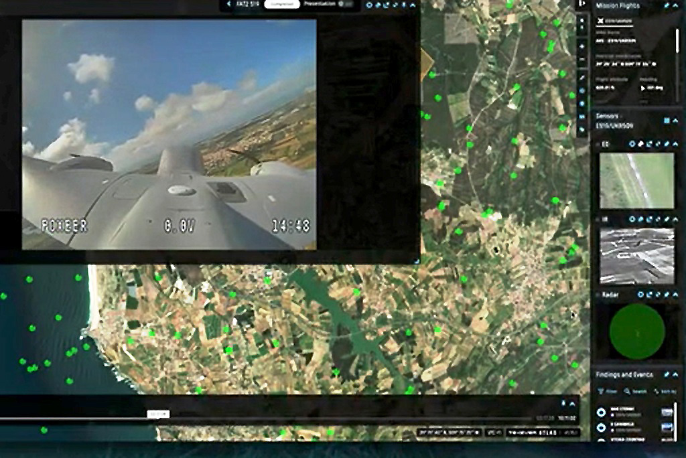
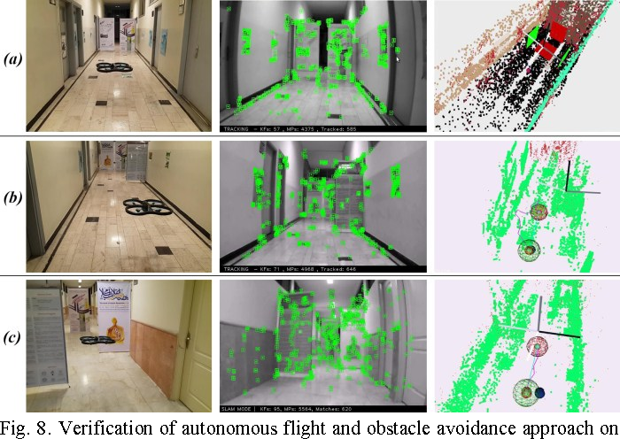

Drone Specialities

Rapid & Accurate Detection
Rapid and accurate detection via drones utilizes advanced UAV sensors and imaging technology to swiftly and precisely identify and monitor phenomena, enhancing real-time decision-making and operational efficiency.

Real-Time Streaming,Data Fusion and AI
Real-time streaming allows drones to transmit live video and sensor data for immediate assessment, while data fusion and AI enhance analysis with advanced object detection and pattern recognition.

Autonomous Flight & Obstacle Avoidance
Autonomous flight enables drones to follow predefined paths for systematic data collection, while obstacle avoidance systems ensure safe navigation in complex environments.